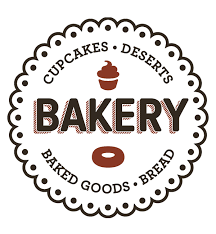

BAKE
Bakery is an establishment that produces and sells flour-based food baked in an oven such as bread, cookies, cakes, donuts, pastries, and pies. Some retail bakeries are also categorized as cafés, serving coffee and tea to customers who wish to consume the baked goods on the premises.
Cakes represent the largest portion of total Bake's sales at 24 percent, followed by cookies 12 percent, breads/rolls 11 percent, cupcakes 8 percent, sandwiches/wraps 6 percent, and yeast-raised donuts and beverages tied at 5 percent. New product success varied by type of operation.
WHERE WILL YOU FIND THIS STORE?
See map for more information.